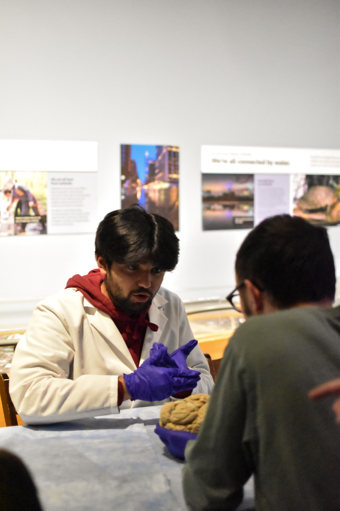

As a TA for BIO 488/588 I held exam review sessions for students, helped with grading exams, and built interactive visualizations for them to better understand topics I struggled with.
Visualizations
Resources can be accessed through the link below or see the code on GitHub.
Brain Night!
Separately from my role as a TA, I also volunteer at Brain Night every year guiding people through holding human brains for the first time. It happens every year at the end of March in Raleigh, highly recommend checking it out if you are in town!
